Functionarea interioara a unei masini
Există multe sisteme diferite necesare pentru ca un automobil să funcționeze corect. Unele dintre sistemele cheie includ: Sistemul de motor: Motorul este inima mașinii și convertește combustibilul în energie mecanică pentru a propulsa mașina. Acesta este compus din mai multe piese, cum ar fi cilindrii, pistoane, arborele cotit și arborele cu came. Sistemul de combustibil: Sistemul de combustibil furnizează combustibil motorului. Include componente cum ar fi rezervorul de combustibil, pompa de combustibil, filtrul de combustibil, injectorul de combustibil și carburatorul. Sistemul electric: Sistemul electric furnizează energie componentelor electrice ale mașinii. Include bateria, alternatorul, motorul de pornire, sistemul de aprindere și diverse senzori. Sistemul de răcire: Sistemul de răcire ajută la menținerea temperaturii motorului în limitele normale. Include componente precum radiatorul, lichidul de răcire, pompa de apă și termostatul. Sistemul de transmisie: Sistemul de transmisie este responsabil pentru transmiterea puterii de la motor la roți. Include componente precum cutia de viteze, ambreiajul și arborele de transmisie. Sistemul de suspensie: Sistemul de suspensie ajută la absorbția șocurilor și denivelărilor în timpul condusului. Include componente precum arcuri, amortizoare și stâlpi. Sistemul de frânare: Sistemul de frânare permite mașinii să încetinească și să se oprească. Include componente precum placuțele de frână, etrierele, discurile de frână și țevile de frână. Sistemul de direcție: Sistemul de direcție permite șoferului să controleze direcția mașinii. Include componente precum volanul, coloana de direcție și cutia de direcție. Toate aceste sisteme lucrează împreună pentru a face ca o mașină să funcționeze în mod lin și în siguranță.
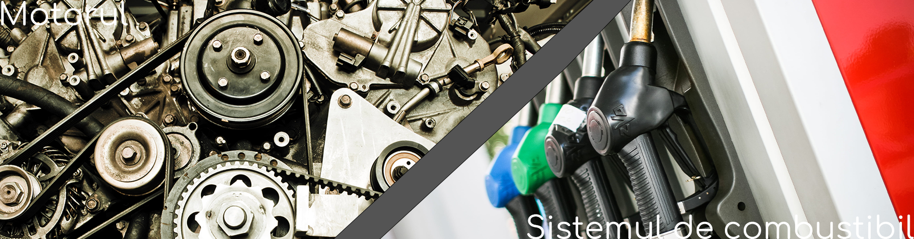
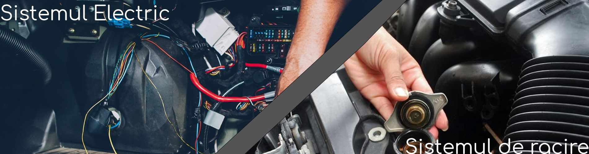
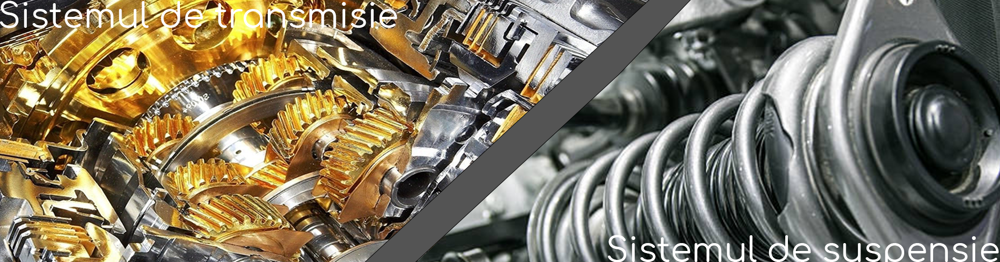
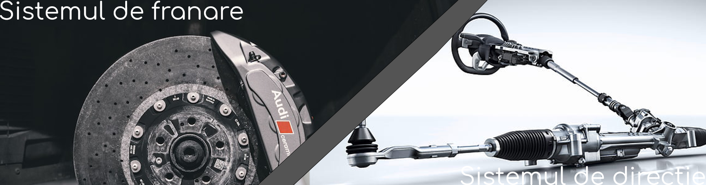
 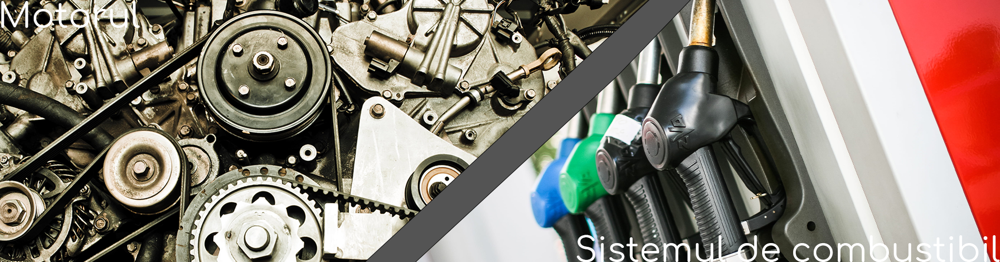
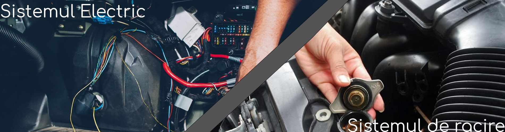
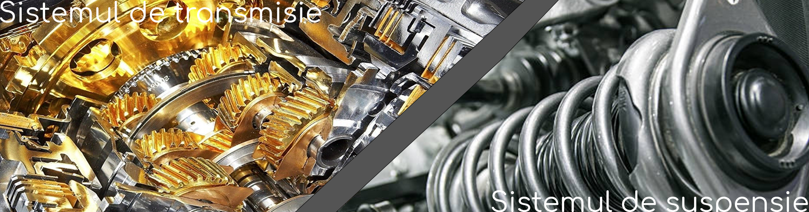
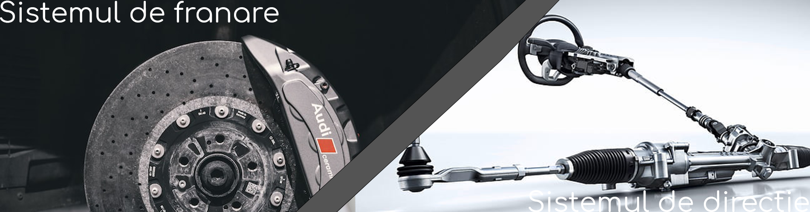
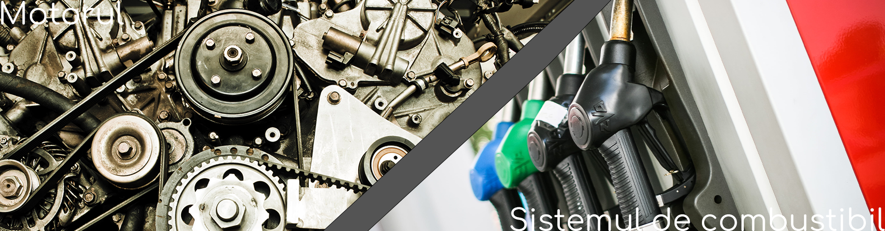
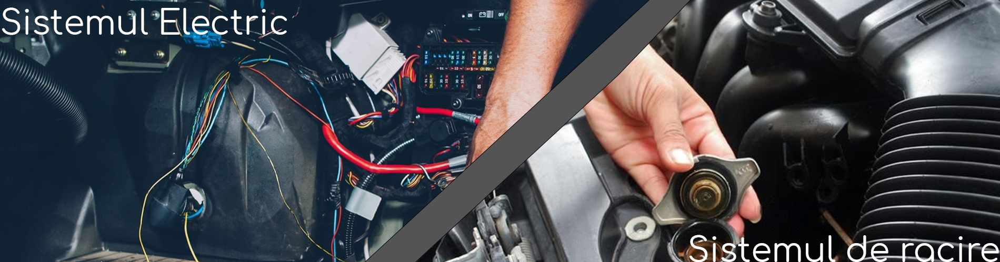
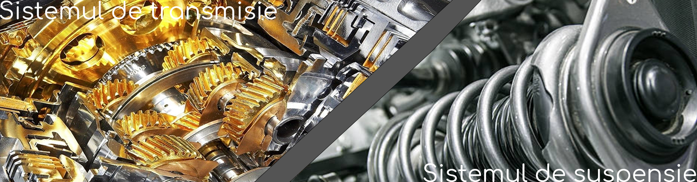
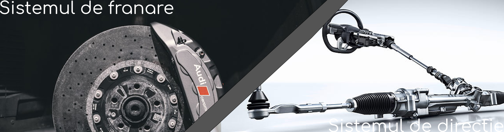